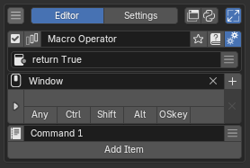
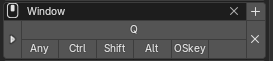

Macro Operator Editor¶
Macro Operator は、複数の操作を 1 回の実行でまとめて順次実行するエディターです。登録した Macro は名前付きのオペレーターとして Blender に組み込まれ、hotkey や他の PME メニュー、Python から呼び出されます。
構成¶
項目 |
値 |
|---|---|
スロット数 |
任意（上から順に実行） |
スロットタイプ |
Command / Menu |
Hotkey 設定 |
あり |
プレビュー |
なし |
詳細設定 |
Description / Poll |
Blender への登録 |
名前付きオペレーター（ |
診断メッセージ |
あり（スロット行に警告アイコン） |
エディター画面¶
{kind=link}

トップバー¶
エディター画面の最上段、メニュー名の左右に並ぶ操作です。画面の見た目はエディターによって少し違いますが、項目の意味は共通です。
- 有効/無効:
メニュー全体を有効化/無効化します。無効化すると hotkey だけでなく、
open_menu()/pme.invoke_pm()などのスクリプト経路、登録済みメニューやパネル経路（Extend Panel / Side Panel / Hidden Panel Group）からも実行されなくなります。
hotkey だけを外したい場合は、メニューを無効化するのではなく Hotkey 設定 を編集してください。- プレビュー:
メニューをその場で表示して、レイアウトや並びを確認します。プレビュー中は実際の context でコマンドは実行されません。プレビューが用意されているエディター（Pie Menu / Pop-up Dialog / Regular Menu）でのみ表示されます。
- メニュー選択:
編集対象のメニューを切り替えます。アイコンは現在のメニュー種別（Pie / Popup / Regular / Modal …）を示します。検索や種別フィルターで絞り込んだ一覧が出ます。
- メニュー名:
メニューの名前です。表示用ラベルであると同時に、他のメニューや Python コードからこのメニューを呼び出すときの識別子になります。
open_menu("名前")で呼び出す場合も、ここで設定した名前を使います。
PME2 では MENU スロット経由のメニュー間参照に uid を持たせるようになり、MENU スロットや Pop-up Dialog / Floating Panel の Dialog リンクは名前を変えても壊れません。一方で、COMMAND / CUSTOM タブ内でopen_menu("名前")/draw_menu("名前")のように名前文字列で呼び出している箇所は、現状まだ名前ベースです。この経路の uid 化は開発中で、いまは PME 側で参照を追跡できないので、メニュー名を変更したらこれらのコードも合わせて直してください。- 被参照ボタン:
このメニューを参照している別のメニューがある場合に表示されます。クリックすると参照元の一覧が出て、そこからジャンプできます。Macro から別の Stack Key を呼んでいる、Regular Menu のスロットから Pop-up Dialog を呼んでいる、といった依存関係を追うときに使います。
- Tag:
メニューの分類・検索用ラベルです。クリックするとタグ編集ポップアップが開き、複数のタグを付けられます。
Tag を付けておくと、Pie Menu Editor の一覧画面で 絞り込み・グループ表示ができ、pm_enable_by_tag("名前", True)でセット単位での有効化にも使えます。Settings > General > Auto-Tag New Menus を有効にすると、現在のタグフィルタで新規メニューに自動でタグが付きます。- ドキュメント:
PME のオンラインドキュメント（このサイト）の該当ページを開きます。
- 詳細設定トグル:
Description（説明文）・Poll（実行可否）・そしてエディターごとの追加オプションのパネルを開閉します。詳細設定を持たないエディター（Hidden Panel Group）もあります。
Hotkey 設定¶
{kind=link}

Blenderのキーマップは階層構造です。PMEのホットキーもその中で解決されるため、どのKeymapに置くかで挙動が変わります。既存のホットキーのKeymapやアクションを調べるには、エディタの+ボタンを使用してください。
Press: キーを押す
Hold: キーを押し続ける
Tweak: キーを押しながらマウスを動かす
Double Click: キーをダブルクリックする
Any modifier は Ctrl / Shift / Alt / OSKey の任意の組み合わせです。コンテキスト感応ツールの作成に使えます。
このアドオンではマウスボタンをモディファイアとして使えます（例: LMB+Tab / RMB+Tab / MMB+Tab）。
print("Ctrl is pressed" if E.ctrl else "Ctrl isn't pressed")
Macro は Blender にオペレーターとして登録されるため、hotkey が未設定でも、メニュー経由 / open_menu() / bpy.ops.pme.invoke_macro(...) などから呼び出せます。
Added in version 2.0.5: スクリプトやカスタム UI から PME Macro を呼び出すための bpy.ops.pme.invoke_macro(...) を追加しました。呼び出し側で Macro 内の全スロット引数を渡さなくても、PME 側の Macro 定義をそのまま使えます。
メニュースロット¶
スロットは上から順に実行されます。Stack Key のように「次の押下まで待つ」挙動はありません。
スロットの追加・削除・並び替えが可能です。
個別スロットの有効化/無効化ができます。
スロットタイプは Command / Menu の 2 種です。
Menu スロットでは PME の Stack Key / Macro Operator / Modal Operator を呼び出せます。Pop-up Dialog / Pie Menu のような対話 UI は Macro の途中から呼び出す対象には適しません。
診断メッセージ¶
スロットで指定したオペレーターやサブメニューが見つからない、Blender 側で無効化されている、poll() を満たせない、といった理由で実行できない見込みがある場合、該当スロット行にエラーアイコンが表示されます。クリックすると詳細メッセージが表示されます。
Added in version 2.0.5: 現在の Blender 環境で見つからない operator が Macro に含まれている場合、Blender の native Macro 実行に入る前に PME 側で検出し、Macro 全体を安全に停止するようになりました。古い設定、無効化されたアドオン、名前が変わった operator が原因で Blender ごと落ちることがあった既知の問題への対策です。
詳細設定¶
- Description:
自作のマクロや複雑なコマンドを後で見返したとき、何のために作ったか分からなくなる。PME ではメニューにもスロットにも説明文を残せます。
右のスクリプトトグル を ON にすると、Description は Python 式として扱われ、毎回評価された戻り値が表示されます。現在のモードや選択数を反映した動的な説明文にできます。return f"Active: {C.active_object.name if C.active_object else '(none)'}"
説明文を書いていないメニューでも、tooltip は参照先のメニュー名を自動で表示します。書いておくと、その内容で上書きされます。共有時に意図が伝わる、後から見返したときに迷子にならない、というのが Description の目的です。
- Poll:
「今の Blender の状態で、このメニューを実行してよいか」を Python の式で判定する仕組みです。式の戻り値が
Trueならメニューが実行され、Falseなら hotkey や UI から呼ばれてもスキップされます。ao = C.active_object; return ao and ao.type == 'MESH'
Poll は hotkey 経由の呼び出しだけでなく、HOLD / TWEAK / CHORD、
open_menu()/pme.invoke_pm()などのスクリプト経路、editor preview、Popup Dialog や通常メニューの描画、Macro / Modal / Sticky / Floating Panel からの呼び出しでも確認されます。設定しておけば、現在の context では使えないメニューが別経路から実行されてしまうケースを防げます。右の から、よく使う条件をその場で追加できる Poll 補助メニューが開きます（モード判定・空 Poll の挿入・Cut / Copy / Paste など）。条件の書き方の入口は Poll Method の基礎 にまとめてあります。
Macro の Poll は「この Macro 全体を実行してよいか」の判定として評価されます。
スロットエディタ¶
ボタンがクリックされた時に実行される任意のPythonコードを設定します。
# オペレーターを実行する
bpy.ops.object.mode_set(mode='OBJECT')
# 条件分岐を使用する (Ctrlを押していた場合はモンキーを追加、それ以外は立方体を追加)
O.mesh.primitive_monkey_add() if E.ctrl else O.mesh.primitive_cube_add()
コマンドの記述方法
Blenderの文字列プロパティーは、複数行のコマンドを記述できません。
そのため、複数のコマンドを記述する場合は、セミコロン(;)で区切る必要があります。
参考: Pythonコマンドの記述方法
グローバル変数
利用可能なグローバル変数の例：
C: bpy.context（現在のBlenderコンテキスト）O: bpy.ops（Blenderのオペレーター）E: event（イベント情報）
こちらでさらに詳細なグローバル変数の一覧を確認できます。
ボタンがクリックされた時にPME内で作成した他のメニューアイテムを呼び出します。 例：
Popup Dialogを
Expand Popup Dialogで表示Regular Menuを
Open on Mouse Overで表示Macro Operatorを実行
応用的な使い方¶
連続操作をまとめる¶
スロット 1（Command）:
bpy.ops.object.mode_set(mode='EDIT')
スロット 2（Command）:
bpy.ops.mesh.select_all(action='SELECT')
同じオペレーターを違うパラメータで実行する¶
各スロットを独立したステップとして並べられるため、Blender 標準の Macro では同じオペレーターを 2 回入れにくいケースを回避できます。
bpy.ops.mesh.inset(thickness=0.02)
bpy.ops.mesh.inset(thickness=0.05)
Stack Key の各スロットを複数ステップにする¶
Stack Key の Command スロットから Macro を呼び出すと、巡回する各ステップが複数操作を持てる構成になります。
open_menu("My Macro Operator")
または bpy.ops.pme.invoke_macro を使う形：
bpy.ops.pme.invoke_macro(name="My Macro Operator")
別の Macro / Stack Key / Modal を呼ぶ¶
Macro の Menu スロットで PME の他エディターを指定すると、そのオペレーターを Macro の 1 ステップとして組み込めます。複雑な処理を小さな Macro / Stack Key へ分割して名前を付ける運用が可能です。
INVOKE でインタラクティブな操作を含める¶
Transform 系のように、ユーザーのマウス入力を待つオペレーターは 'INVOKE_DEFAULT' を渡して呼びます。インタラクティブな操作を Macro の途中に挟むと、その操作が確定するまで次のスロットへ進めません。
bpy.ops.transform.resize('INVOKE_DEFAULT')
context / area の事前設定¶
Macro はスロットごとに context が必要なため、mode switch / area focus / operator poll の影響を受けます。focus_area / override_context などの補助ヘルパーで前提を整えてから本処理に入る構成が使われます。
focus_area('VIEW_3D')
関連ページ